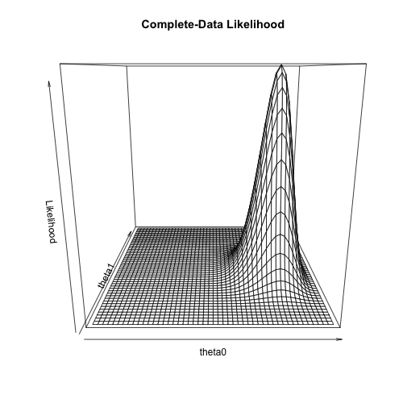
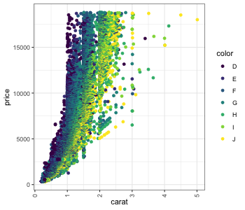

What is the Expectation Maximization (EM) Algorithm?
We are often faced with the issues of incomplete data. This can include typical missing data problems and also latent variables, i.e. some underlying state that remains unobserved. Using an example from Do and Batzoglou,1 we will review the Expectation-Maximization (EM) algorithm.1 Complete-Data Example
1.1 A Coin-Flipping Experiment
We have two coins \(A\) (\(Z=0\)) and \(B\) (\(Z=1\)) with unknown head probabilities \((\theta_{0},\theta_{1})\). We will repeat the following process 5 times.
Note that we only need the number of heads (sufficient statistic), not the entire sequence.
- Randomly pick either coin with equal probability and record
- Toss 10 times and record the number of heads
- Draw \(Z_{i} \sim \text{Bernoulli}(p = 0.5), Z_{i} \in \left\{ 0,1 \right\}\)
- Draw \(X_{i} | Z_{i} \sim \text{Binomial}(n = 10, p = \theta_{Z_{i}}), X_{i} \in \left\{ 0, \dots, 10 \right\}\)
| Index | Coin | Heads |
|---|---|---|
| \(i\) | \(Z_{i}\) | \(X_{i}\) |
| 1 | 1 | 5 |
| 2 | 0 | 9 |
| 3 | 0 | 8 |
| 4 | 1 | 4 |
| 5 | 0 | 7 |
1.2 Complete-Data Maximum Likelihood
If we observe both the coin identity \(Z_{i}\) and heads \(X_{i}\), the MLE is the total heads / total tosses for each coin. Here we introduce a very redundant expanded table for later reuse.
| Index | Coin | Prob. Coin A | Prob. Coin B | Heads | Heads Coin A | Heads Coin B |
|---|---|---|---|---|---|---|
| \(i\) | \(Z_{i}\) | \(E[(1-Z_{i})\vert Z_{i},X_{i}]\) | \(E[Z_{i}\vert Z_{i},X_{i}]\) | \(X_{i}\) | \(E[(1-Z_{i}) X_{i} \vert Z_{i},X_{i}]\) | \(E[Z_{i} X_{i} \vert Z_{i},X_{i}]\) |
| 1 | 1 (B) | 0 | 1 | 5 | 0 × 5 | 1 × 5 |
| 2 | 0 (A) | 1 | 0 | 9 | 1 × 9 | 0 × 9 |
| 3 | 0 (A) | 1 | 0 | 8 | 1 × 8 | 0 × 8 |
| 4 | 1 (B) | 0 | 1 | 4 | 0 × 4 | 1 × 4 |
| 5 | 0 (A) | 1 | 0 | 7 | 1 × 7 | 0 × 7 |
| Sum | 3 | 2 | 33 | 24 | 9 |
- MLE: \(\widehat{\theta}_{0} = 24 / (3 \times 10) = 0.80\); \(\widehat{\theta}_{1} = 9 / (2 \times 10) = 0.45\)

2 Part 2
aaa
3 Code example
library(ggplot2)
ggplot(data = diamonds, mapping = aes(x = carat, y = price, color = color)) +
geom_point() +
theme_bw() +
theme(axis.text.x = element_text(angle = 90, vjust = 0.5),
legend.key = element_blank(),
plot.title = element_text(hjust = 0.5),
strip.background = element_blank())

4 Conclusion
In conclusion, we examined a better way to export from an org-mode document to datascienceplus.com.
5 Bibliography
- Do, Chuong B. and Batzoglou, Serafim, What Is the Expectation Maximization Algorithm?, Nat. Biotechnol., 26(8), pp. 897-899 (2008).